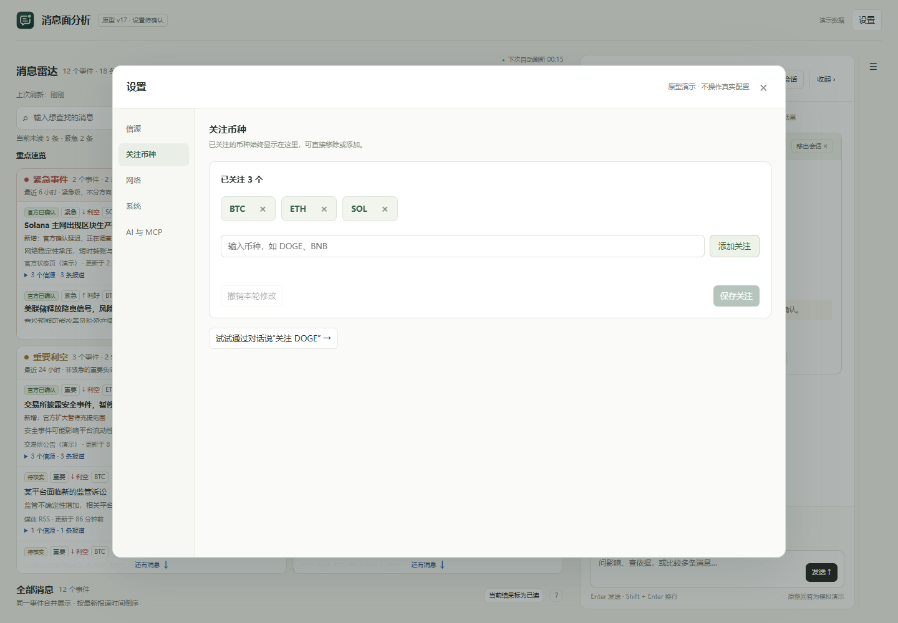
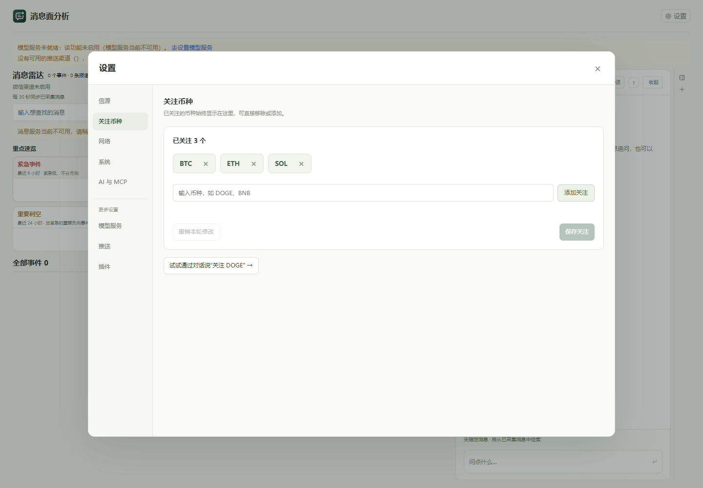
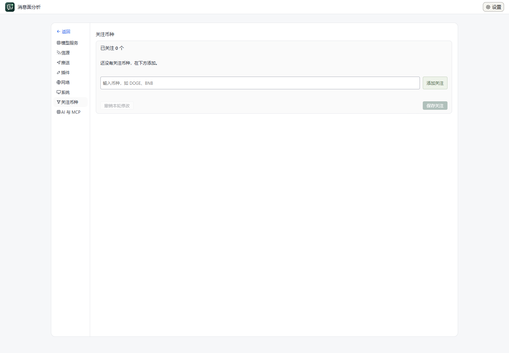
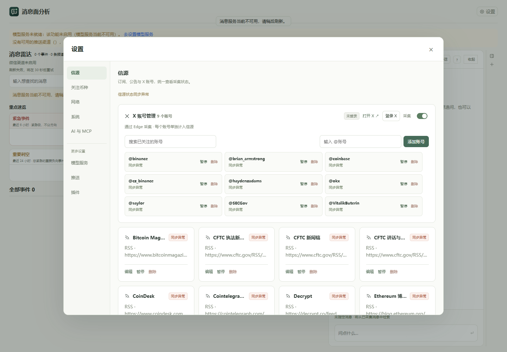
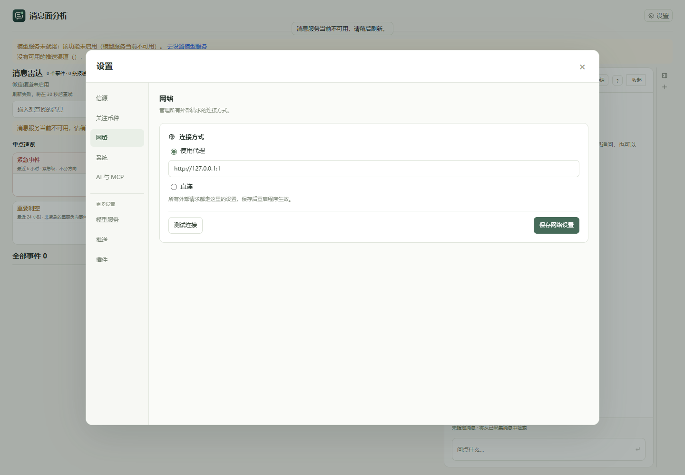
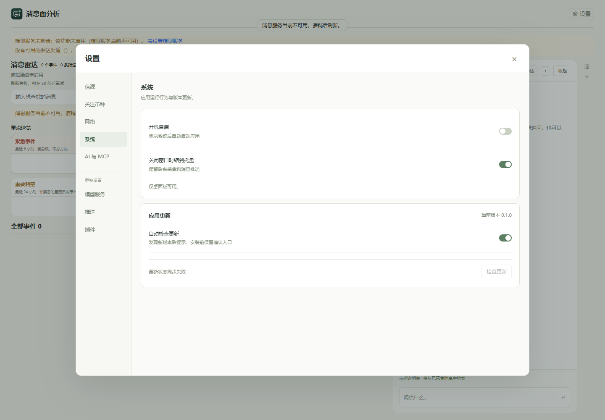
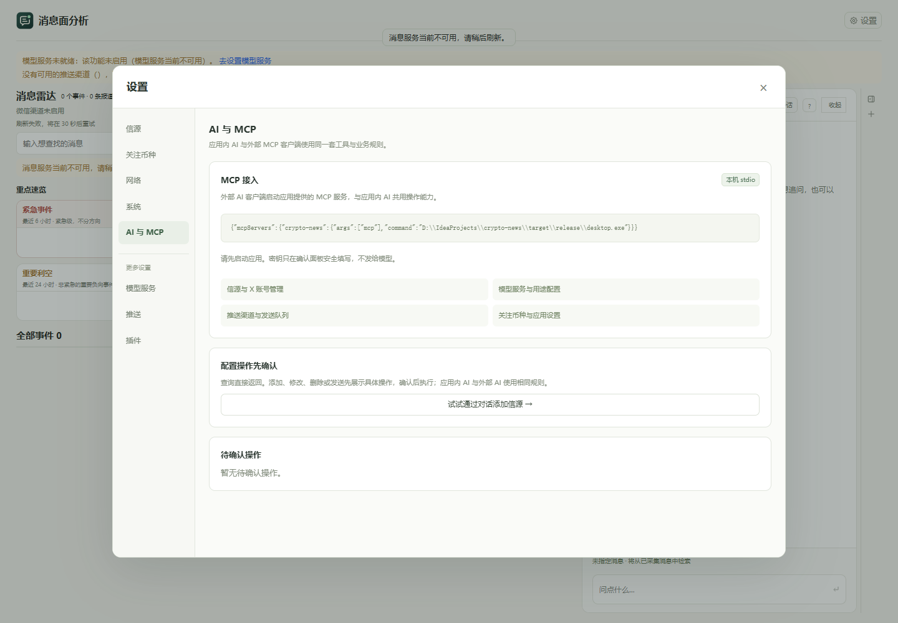
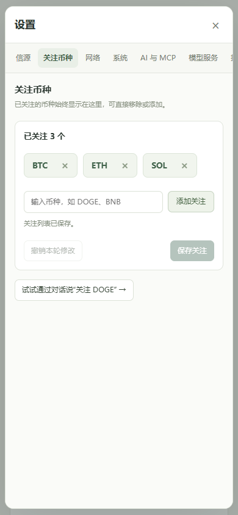

设置页：最新原型与 0.2.3 实际应用
同为 1440 × 1000 视口；实际应用使用独立验收数据。本次打包程序的内嵌界面已复核，尚未覆盖安装到用户当前应用。
已确认原型
0.2.3 实际程序
查看修复前的 0.2.2 设置页

各分类实际界面
信源与 X 账号管理
网络
系统（独立服务环境不提供桌面开关能力）
AI 与 MCP
窄屏 390 × 844

查看交互验收记录和验证范围